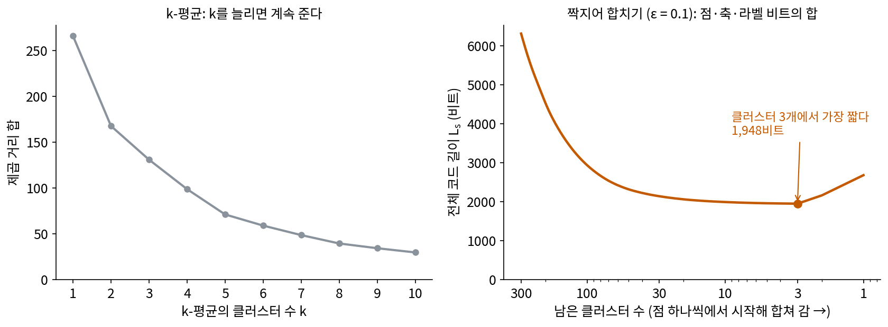
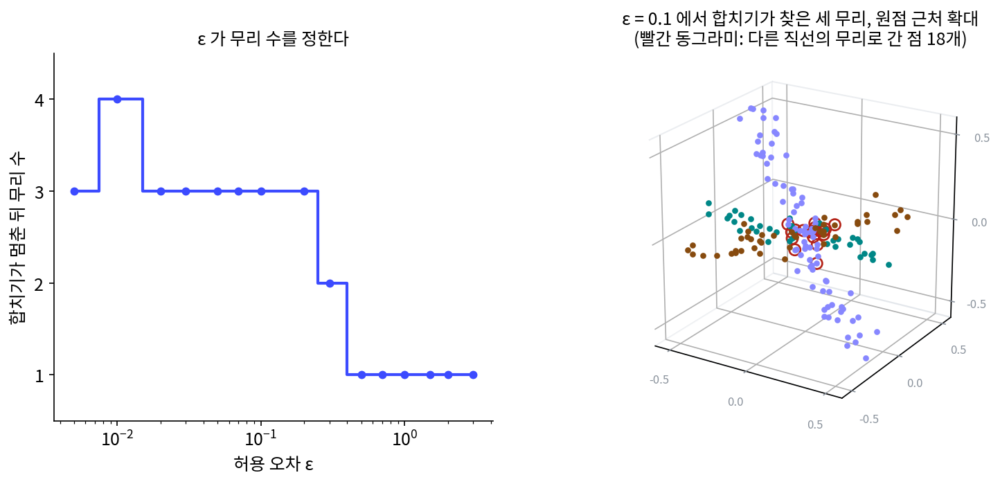
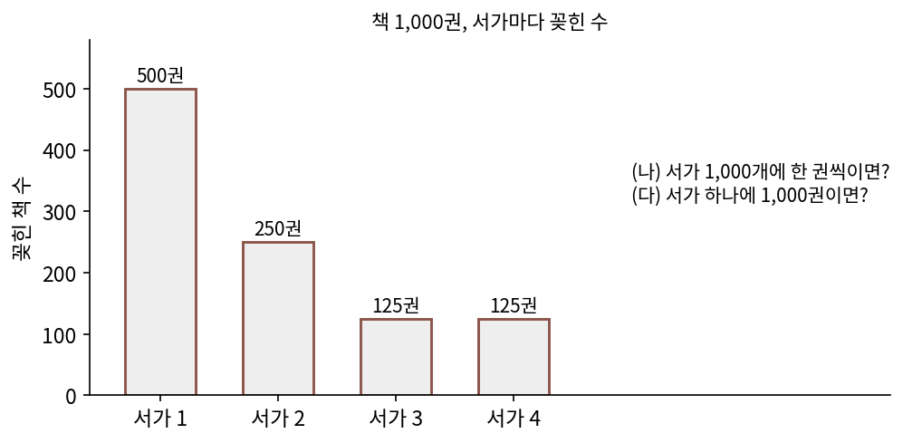
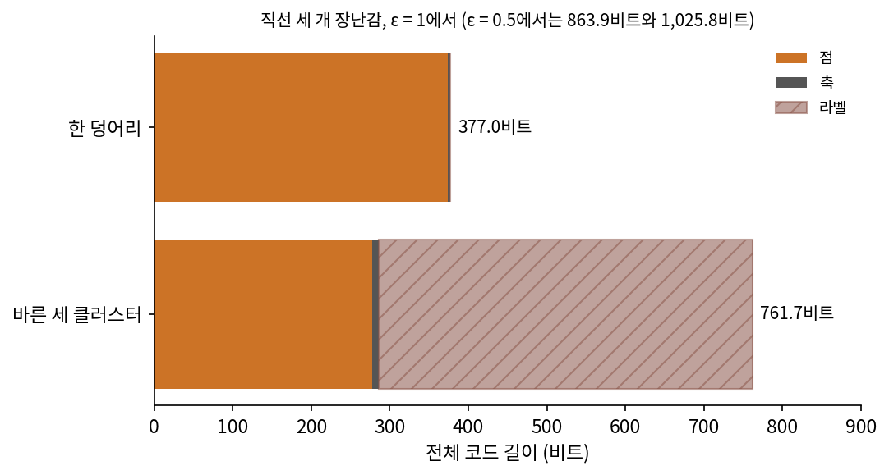
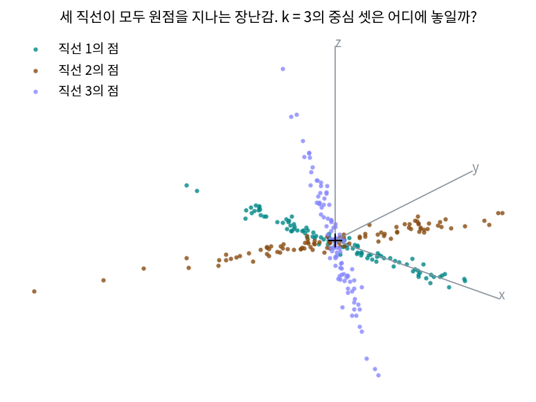

코딩 레이트와 코딩 레이트 감소: 클러스터별로 적으면 짧아진다
클러스터 나누기: 가장 짧게 적는 나누기
코딩 레이트 감소는 라벨을 알 때 나누기를 채점했다. 라벨이 없을 때는 가장 많이 아끼는 나누기를 고르면 될 것 같지만, 그렇게 고르는 데에는 함정이 있다. 동네별 주소에서 보았듯 라벨을 적는 데도 비트가 들고, 클러스터마다 그 클러스터가 쓰는 방향(타원체의 축)도 받는 쪽에 알려야 한다. 점 하나하나를 저마다 한 클러스터로 두면 클러스터마다 방향이 하나뿐이라 아주 납작해 보이지만, 그 축을 300번 적어야 한다. 무엇을 모두 더해야 가장 짧은 나누기가 바른 나누기가 될까?
역사: 클러스터 수를 미리 정하지 않기
2007년 논문의 머리말은 그때까지의 방법을 둘로 나눈다. k-평균이나 기댓값 최대화(EM)처럼 클러스터를 나누는 일과 클러스터마다의 모델을 맞추는 일을 번갈아 되풀이하는 방법, 그리고 혼합 모델 전체를 먼저 한 번에 맞춘 뒤 성분으로 쪼개는 방법이다. 어느 쪽이든 클러스터 수나 모델의 꼴을 먼저 정해야 한다. 마 외는 클러스터마다 거의 납작한(퇴화한) 가우스가 섞인 자료를, 클러스터 수를 미리 정하지 않고 나누고 싶었다.
마 외의 방법은 단순하다. 점 하나씩을 한 클러스터로 두고 시작해, 합쳤을 때 전체 코드 길이가 가장 많이 줄어드는 두 클러스터를 합친다. 어느 두 클러스터를 합쳐도 줄지 않으면 멈춘다(논문의 알고리즘 1). 허용 오차 하나만 정하면 클러스터 수와 클러스터마다의 차원은 저절로 정해진다. 논문은 허용 오차를 바꿔 가면 클러스터 수가 계단처럼 갑자기 바뀌는 「상전이 같은」(물이 0 °C에서 갑자기 얼음이 되듯 성질이 한꺼번에 바뀌는) 모습이 나타난다고 적었다.


클러스터 수를 모르면 k = 2, 3, 4…로 다 돌려 보고 제일 좋은 걸 고르면 되지 않아요?

「제일 좋은」을 무엇으로 재죠? k-평균이 줄이는 제곱 거리 합은 k를 늘리면 어떻게 되나요?

어… 중심이 많아질수록 점마다 더 가까운 중심이 생기니까 계속 줄어요. 점마다 중심이 하나씩이면 0이고요.

그러면 k가 클수록 무조건 좋아 보이네. 그 기준에는 k를 늘린 값을 치르는 항이 없어.

그래요. 그렇다고 모든 나누기를 다 견줄 수도 없어요. 점 300개를 클러스터로 나누는 방법은 9.59 × 10⁴⁵³가지예요.

그래서 점 하나씩에서 시작해 둘씩 합쳐 간 거구나. 첫걸음에 견줄 클러스터 쌍은 44,850개라 셀 수 있는 수고.

그런데 합칠 때마다 점을 적는 비트만 보면 k-평균처럼 클러스터가 많은 쪽이 유리할 것 같아요. 무엇을 더 세야 클러스터를 늘린 값이 셈에 들어가요?
점 300개를 짝지어 합치기
먼저 전체 코드 길이를 세 부분으로 나눠 보자(ε = 0.1, sources/rate-reduction/s3_segment.py). 클러스터 하나의 점을 적는 비트는 점 수 × 코딩 레이트다. 여기에 그 클러스터의 축 d개를 적는 비트 d × 코딩 레이트가 붙는다(논문은 축을 적는 비트를 「모델을 적는 비트」로 보았다). 마지막으로 점마다 어느 클러스터인지 알리는 라벨 비트가 붙는다.
| 나누기 | 전체 코드 길이 | 점 | 축 | 라벨 |
|---|---|---|---|---|
| 한 덩어리 | 2,678.3 | 2,651.8 | 26.5 | 0 |
| 바른 세 클러스터 | 1,961.2 | 1,442.4 | 43.3 | 475.5 |
| 직선 1·2를 섞은 두 클러스터 | 2,257.3 | 1,945.9 | 35.9 | 275.5 |
| 점 하나씩 300 클러스터 | 6,310.9 | 960.6 | 2,881.7 | 2,468.6 |
점을 적는 비트만 보면 점 하나씩 300 클러스터가 960.6비트로 가장 적지만, 축 2,881.7비트와 라벨 2,468.6비트를 더하면 가장 길다. 점·축·라벨의 비트를 모두 더하면 바른 세 클러스터가 가장 짧다. 클러스터를 늘릴수록 점은 싸게 적히지만 축과 라벨이 비싸지고, 그 사이에서 균형이 맞는 곳이 바른 클러스터 수다.
허용 오차 하나를 정해 두고 Ls가 가장 짧은 나누기를 바른 나누기로 삼는 생각을 가장 짧은 나누기 (전체 코드 길이가 가장 짧은 클러스터 나누기, segmentation by minimum coding length)라 한다. 모든 나누기를 다 견줄 수는 없으니, 위의 짝지어 합치기로 찾는다.
장난감에 ε = 0.1로 짝지어 합치기를 돌리면 점 105, 98, 97개의 세 클러스터에서 멈춘다. 전체 코드 길이는 1,947.5비트로, 바른 라벨대로 나눈 1,961.2비트보다도 짧다. 다른 직선의 클러스터로 간 점이 18개 있는데, 모두 원점에서 0.199 안쪽이다(그 18개의 원점 거리 중앙값 0.093, 전체 점의 중앙값 0.628). 세 직선이 만나는 원점 근처에서는 점이 어느 직선에 속하는지 비트로 보아도 가릴 수 없고, 더 짧게 적히는 클러스터로 가는 편이 실제로 짧다.
허용 오차를 바꿔 가며 돌리면 클러스터 수가 달라진다. ε가 0.005에서 0.2 사이면 클러스터 셋에서 멈춘다(0.01에서만 점 둘짜리 작은 클러스터가 하나 더 남는다). 0.3에서는 둘, 0.5부터는 하나다. 눈금이 커질 때 클러스터 수가 왜 줄어드는지는 아래 문제 8에서 코드 길이를 점·축·라벨로 나눠 보며 따진다.

ML에서: 모델의 비트까지 세는 나누기
전체 코드 길이를 점을 적는 비트와 축을 적는 비트로 나누는 것은 최소 기술 길이의 두 부분 코드와 짜임이 같다. 두 부분 코드도 모델을 적는 비트와 그 모델로 자료를 적는 비트를 더해 합이 가장 짧은 모델을 고른다. 2007년 논문도 점을 적는 비트를 자료의 비트에, 축을 적는 비트를 모델 파라미터의 비트로 보았다. 클러스터 수를 늘리는 일은 모델을 크게 하는 일이고, 커진 모델의 값은 축과 라벨의 비트로 치른다. 그래서 클러스터 수를 따로 정하지 않아도 된다. 임베딩을 클러스터로 나누는 흔한 방법인 k-평균과 무엇이 다른지는 아래 문제 9에서 직접 견준다.
문제 7. 서가 번호의 값
책 1,000권이 서가 넷에 500, 250, 125, 125권씩 꽂혀 있다. (가) 책마다 어느 서가인지 알리는 데 권당 평균 몇 비트가 드는가? (나) 서가를 1,000개로 늘려 한 권씩 꽂으면? (다) 서가가 하나면? 서가를 늘리면 무엇을 얻는가?

(가)는 서가가 넷이니까 2비트요.
민준 학생, 500권이 꽂힌 서가와 125권이 꽂힌 서가의 번호를 같은 길이로 적어야 하나요?

아, 흔한 서가에 짧은 번호를 주면 되죠. −log₂(비율)이니까 1, 2, 3, 3비트, 평균 0.5 × 1 + 0.25 × 2 + 0.125 × 3 × 2 = 1.75비트예요.
(나)는 서가 1,000개에 한 권씩이니 log₂ 1,000 = 9.966비트, (다)는 0비트야. 서가를 늘릴수록 라벨이 비싸져.
그럼 서가는 하나가 제일 좋은 거야? 라벨 비트만 보면 그런데, 그건 아닐 것 같아.
서연 학생, 서가가 하나면 책을 찾을 때 무엇이 비싸지죠?

서가 안에서 몇 번째 책인지 적는 비트요. 1,000권이 한 서가면 그 번호가 길고, 서가를 나누면 서가 안 번호가 짧아져요. 라벨 비트와 서가 안 비트의 합이 가장 짧은 서가 수가 있겠네요. 클러스터 나누기에서 라벨과 점의 비트가 맞서는 것과 같아요.

동아리 단톡방을 기수별로 나누는 거랑 같아요. 방이 너무 많으면 어느 방인지 찾는 게 일이고, 하나면 공지가 묻혀요.
문제 8. 눈금이 크면 나누지 않는다
직선 세 개 장난감에서 ε = 1이면 한 덩어리의 전체 코드 길이는 377.0비트(점 373.3 + 축 3.7), 바른 세 클러스터는 761.7비트(점 277.8 + 축 8.3 + 라벨 475.5)다. ε = 0.5에서는 863.9비트와 1,025.8비트다. 바른 클러스터가 왜 오히려 길어지는가? 「나누지 않는다」는 답은 틀린 것인가?

라벨이 475.5비트로 너무 비싸서요. 점을 적는 비트는 세 클러스터가 95.5비트 아끼는데 라벨이 그 다섯 배예요.
라벨 475.5비트는 ε = 0.1에서도 같았어요. 그때는 왜 괜찮았죠?
ε = 0.1에서는 점을 적는 비트가 한 덩어리 2,651.8, 세 클러스터 1,442.4라서 1,209비트를 아꼈어요. 아끼는 양이 라벨보다 컸던 거예요. 눈금이 커지면 점을 적는 비트 자체가 작아져서, 나눠서 아끼는 양도 줄어요.
그래도 이상해. 직선이 셋인 건 사실인데, 코드 길이가 「하나」라고 답하면 틀린 답 아니야?
서연 학생, 반지름 1짜리 공으로 이 점들을 본다고 해 봐요. 세 직선은 원점 둘레로 길이 2쯤 퍼져 있어요. 그 눈금에서 세 직선이 구별되나요?
공 몇 개 안에 다 들어가서 구별이 안 돼요. 그 눈금으로는 정말 한 덩어리예요. 틀린 게 아니라, 「얼마나 자세히 볼 것인가」를 정해야 클러스터 수도 정해지는 거네요. 내재 차원이 눈금에 따라 달랐던 것처럼요.

해석학에서 ε-근방을 크게 잡으면 서로 다른 점도 같은 근방에 들어가 구별이 안 되는 거랑 같아요.
문제 9. k-평균은 이 직선들을 가를 수 있을까
같은 장난감에 k-평균(k = 3)을 돌렸다. 처음 중심을 무작위로 고르기를 씨앗 20개로 하고, 제곱 거리 합이 가장 작은 결과를 골랐다. 클러스터 크기는 151, 93, 56개이고, 클러스터마다 가장 많은 직선의 점 비율(순도)은 0.470이었다. 짝지어 합치기의 순도는 0.940이다. 왜 이런 차이가 나는가? 그 k-평균 나누기의 전체 코드 길이와 ΔR은 얼마쯤이겠는가?

클러스터 수를 정답대로 3으로 줘도 안 되네요. 씨앗을 더 돌리면 나아지지 않을까요?
민준 학생, k-평균은 점을 어디에 붙이죠?
가장 가까운 중심에요. 그런데 세 직선이 다 원점을 지나니까… 직선의 중심은 셋 다 원점이에요. 중심 셋이 같은 자리면 가를 수가 없어요.
그래서 실제로 찾은 중심이 (0.16, −0.07, −0.11), (0.94, 0.59, 0.01), (−0.75, −0.24, 0.17)이야. 원점 근처 하나, 양쪽 바깥에 하나씩.
그 중심 셋으로 가르면 공간은 어떻게 나뉘나요?
직선을 따라가지 않고, 공간을 원점에서의 거리와 방향으로 잘라요. 씨앗을 아무리 돌려도 k-평균이 보는 것은 거리라서 중심 하나는 원점 근처에 남고 직선은 갈리지 않아요.
계산해 보니까 그 나누기의 전체 코드 길이가 2,744.2비트예요. 한 덩어리 2,678.3비트보다 길어요. ΔR은 1.403비트라 바른 라벨의 4.031보다 한참 작고요.

k-평균은 클러스터를 「중심 둘레의 공」으로 보고, 코드 길이는 클러스터를 「납작한 타원체」로 봐. 자료가 직선이나 평면 근처에 있으면 공으로는 못 잡고 타원체로 잡아야 해. 그리고 코드 길이는 이 나누기가 나누지 않느니만 못하다는 것까지 알려 줘.
학생들을 사는 동네로만 반을 나누면 같은 동아리 친구가 다 흩어지잖아요. 사는 곳 사이의 거리가 k-평균이 보는 거리, 동아리가 직선이에요. 무엇이 가깝다고 볼지가 나누기를 정해요.